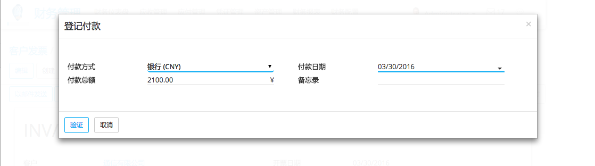
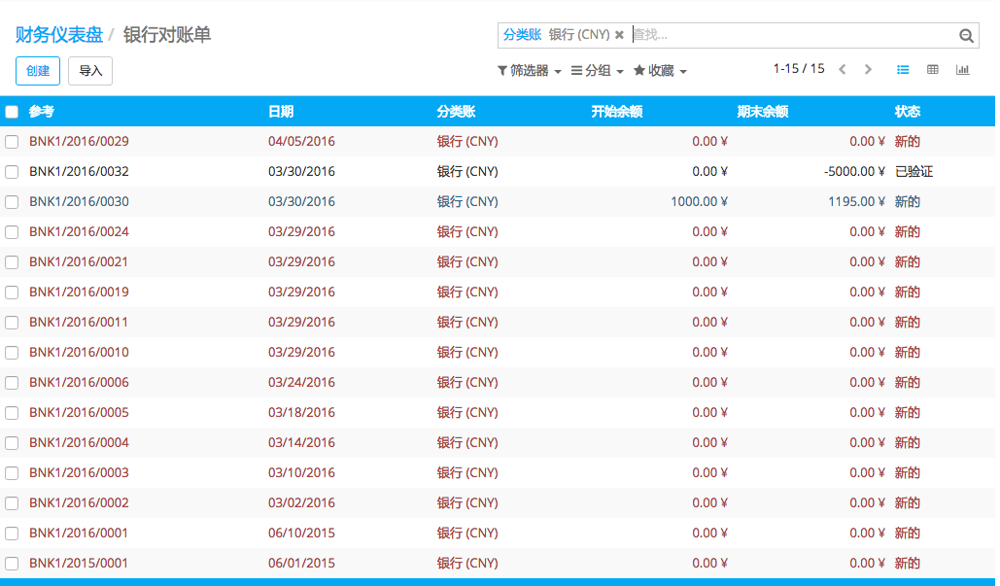

概述
将账户链接到银行对账单的工作量比较大。你需要找到发票,相关的付款, 这需要很多的时间。幸运的是,使用YuanCloud, 您可以很容易地将发票或是付款链接到相关的银行对账单。
yuancloud中存在2种对账过程.
能在发票上直接登记付款
我们能用银行对账单调节开放的发票
配置
登记发票不需要任何特殊配置。我们需要做的就是安装会计软件。
使用案例
案例1: 付款登记
我们收到付款证明, 是史密斯公司的2100欧元。
我们开了张2100欧元的发票给史密斯公司。因为我们出售的产品是服务,要求立即付款。而我们的会计只在周末处理银行对账单,所以我们在发票上做标记为支付, 就可以为我们的客户提供服务。
我们的客户发给我们付款凭证。我们可以登记付款, 相关的发票为已付。
通过点击 付款登记(register payment) ，我们告诉YuanCloud，客户已支付。我们因此需要指定金额和支付方式
我们可以找到付款信息，通过单击发票上 。
发票已经支付， 自动核销已完成 。
案例2: 银行对账单对账
我们开始已开给Smith & Co的3000欧元的发票。让我们也假定其他不同客户的发票未付款。
我们收到银行对账单, 不仅是史密斯公司的款已支付,Buzz的92欧元也已支付。
导入(Import) 或 创建(Create) 银行对账单。请在银行提要部分参考相关文档。
在仪表板, 点击 核销 # 项

如果一切是正确的(正确的业务伙伴名字，金额正确), yuancloud会 自动(automatically) 核销。

如果发现某些问题，需要执行 手工动作 。
例如,如果在银行对账单中缺少业务伙伴,请填写
如果用首付完成了付款,只检查它是否正确并验证所有相关的付款
小技巧
点击CTRL-Enter, 核销表中的所有项。